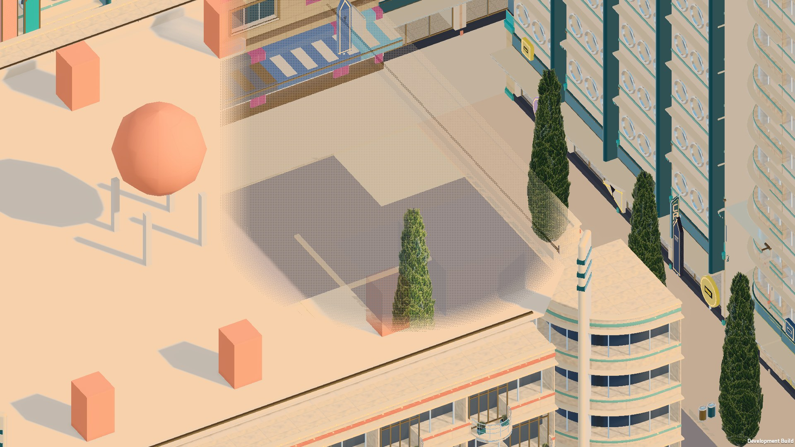

Latch, 2026-10-14. MacBook Air 15-inch M4 (Mac16,13), Unity 6000.6.2f1, development player, 1920 × 1080 fullscreen window, world only
(no people, vehicles or sim). Export 9b2b451d, scene fingerprint 80fdd304, held fixed for every run. Answers Redline's
out/review/008-b6-perf.html (item 0, M1–M8, fixes 1–3). Labels: valid contaminated, usable as a ratio
invalid.
VertexChannelCompressionMask 4054 → 0: NaN pixels at home 27,390 → 0, and 0 at every stop
of every run since. No Stop NaNs; the harness counts NaN pixels at every stop as the guard.
The NaN probe renders the play camera without post-processing into a float target and counts non-finite pixels. At home, as built: 27,390. Switches
that removed them: SSAO off, SRP Batcher off, environment reflections off, specular off; the procedural bakelite batch off left 302. Shadows, the fade,
probes, point lights, the clear coat and the opaque and depth textures changed nothing. A diagnosis player per compression mask (nan/vc*.txt):
| mask | kit mesh layout in the player (non-readable) | stride | NaN pixels, home |
|---|---|---|---|
| 4054 (as committed) | P32×3, N16×4, T16×4, UV16×2 | 32 | 27,390 |
| 4052 | P32×3, N32×3, T16×4, UV16×2 | 36 | 0 |
| 4050 | P32×3, N16×4, T32×4, UV16×2 | 40 | 0 |
| 4038 | P32×3, N16×4, T16×4, UV32×2 | 36 | 0 |
| 0 (the fix) | full precision, as in the Editor | – | 0 |
The procedural batch meshes are readable, so never compressed: P32×3, N32×3, UV32×2, also 32 bytes. Every mask that moves the kit
stride off 32 clears the NaNs, so the cause is two layouts behind one stride in the same batch, a Unity/Metal player bug (candidate for a Unity report;
the Editor never compresses). With mask 0 the player's layouts equal the Editor's. The fix is unity/ProjectSettings/ProjectSettings.asset,
one line. Cost: kit vertex buffers stay full precision (memory, not frame time, at this scale).
| Redline | Now |
|---|---|
| item 0, A/B switches | Variants in the plan, or one from the command line (-perfSsao on|depth|off -perfCascades n -perfShadows on|off -perfFade on|off -perfProxies on|off).
SSAO depth = after opaque from the depth texture (no depth-normals prepass); proxies = kit facades and street trees cast from their LOD1 mesh, no LOD casts its own (1,923 proxies, 3.12M triangles).
The perf build keeps the shader variants the switches need (PerfVariantsRenderer): URP's prefiltering had stripped SSAO's depth-source and AO-off variants, so the first build's SSAO switches ran fallback variants. Numbers before that rebuild are void. |
| M1 capped + uncapped | Passes: ab uncapped, capped vSync 1, pan. Frame time is now the wall-clock interval between updates: Unity's vSync deltaTime reported 16.667 ms while real intervals were 17–50 ms. A missed vblank is a frame past 25 ms (vSync on macOS jitters 15.7–17.7 ms without missing). |
| M2 preflight | Machine load, thermal, power, Low Power Mode, Editor/VM/computer-use, top processes, into machineStart/machineEnd; warns, -perfStrict refuses. |
| M3 warm-up, thermal, A…A | Warm-up cycles the stops to a frame-time plateau (2%, 180–900 s), recorded; thermal state per segment; each pass's first segment again at the end. |
| M4 rows, repeats | Per-frame and per-timing CSV rows; 3 rotated repeats, variants interleaved. |
| M5 counters | Profiler counters as p50; the GPU Resident Drawer's per-view culling (camera, each shadow split) read by reflection. |
| M6 ranking | By frame time. GPU ms from FrameTimingManager on Metal spans overlapping command buffers and exceeds the frame time: upper bound only. |
| M7 probes | Thermal, drawer, NaN count and shot run in the settle; the settle lasts until 1 s passes without a frame over 100 ms and the probes are in (first use of a variant compiles pipeline states). |
| focus | Unfocused frames counted per segment; the summary leaves out repeats unfocused for over 1% of frames when focused ones exist. |
| run | when (UTC) | conditions | verdict |
|---|---|---|---|
ab-1ab-1/ | 11:30–12:24 | AC power. Splice's full test suite (bun, ~100% = one core of ten) throughout; Editor open (autotick 1 s), VM idle. Focused for segments 0–110 (repeats 0 and 1 of ab); repeat 2, the capped and pan passes ran unfocused. Warm-up 181 s, settled (last change 1%); thermal state 1 (fair) for 170 of 188 segments; A…A at home +0.8%. |
ab, repeats 0–1: ratios capped: invalid (frame time from vSync deltaTime, unfocused) pan |
r2r2/ | 12:35–13:38 | Battery, then AC at the end. Unfocused for all 209 segments; another process at ≥ 50% CPU in 106 of 209 (Chrome, Codex, T3 Code, dotnet, dart, node, Screen Sharing: r2/load.txt); capped window throttled to ~20 fps (frames 47–80 ms); settle hitches up to 838 ms. |
invalid (kept as the record of what the method catches) |
Frame p50 in ms (median of the focused repeats), and against base at the same stop. Uncapped, so headroom, not fps.
| stop | base | ssao-depth fix 1 | ssao-off | proxies fix 2 | cascades-2 fix 3 | fixes 1–3 | fade-off item 9 | shadows-off |
|---|---|---|---|---|---|---|---|---|
| home | 6.29 | 6.31 +0% | 4.45 −29% | 6.05 −4% | 6.14 −2% | 5.79 −8% | 6.30 +0% | 4.60 −27% |
| cafe-square | 6.61 | 6.62 +0% | 4.76 −28% | 6.48 −2% | 6.42 −3% | 6.23 −6% | 5.88 −11% | 4.87 −26% |
| parade | 7.37 | 6.81 −8% | 5.63 −24% | 7.39 +0% | 6.88 −7% | 6.23 −16% | 5.07 −31% | 4.78 −35% |
| crown-circus | 5.65 | 5.68 +1% | 3.90 −31% | 5.52 −2% | 5.22 −8% | 5.24 −7% | 5.00 −12% | 3.96 −30% |
| harbour-quay | 4.45 | 4.60 +3% | 2.90 −35% | 4.42 −1% | 4.27 −4% | 4.40 −1% | 4.31 −3% | 3.37 −24% |
| heaviest (-60, 0, -200) | 13.09 | 11.50 −12% | 9.92 −24% | 12.17 −7% | 11.33 −13% | 10.08 −23% | 6.60 −50% | 8.29 −37% |
| north-edge (-220, 0, 280) | 9.83 | 9.20 −6% | 7.40 −25% | 9.78 −1% | 8.21 −17% | 7.58 −23% | 5.17 −47% | 5.87 −40% |
Heaviest stop, base: frame p50 13.09 ms, p95 15.0 ms; FrameTimingManager GPU p50 23.8 ms (upper bound: overlapping command buffers, above the frame time). Ranking by frame p50: heaviest 13.1, north-edge 9.8, parade 7.5, café 6.7, home 6.4, crown-circus 5.7, quay 4.4. NaN pixels: 0 at every probed stop and variant. The first B6 run's heaviest p95 of 27.3 ms is not reproduced (15.0 here); the cause of the difference is not isolated.
| stop | base (4 splits) | proxies | cascades-2 | fixes 1–3 |
|---|---|---|---|---|
| home | 298k | 868k | 602k | 623k | 400k |
| parade | 349k | 804k | 722k | 633k | 551k |
| heaviest | 570k | 1,468k | 525k | 1,043k | 370k |
| north-edge | 150k | 457k | 427k | 303k | 273k |
Proxies cut heaviest's shadow triangles by 64% but its frame by 7%: shadow geometry is not where the frame goes.
| fix | measured (ab-1) | look (crops) | proposal |
|---|---|---|---|
| 1 SSAO from depth, after opaque | −6 to −12% at the three heaviest stops; 0 to +3% at the light ones | near identical; small edge differences (crops/crops-ssao-depth.jpg) | keep, Glint to sign off |
| 3 cascades 4 → 2 | −2 to −17% (north-edge −17%, heaviest −13%) | shadow edges shift slightly (parade's tree shadows) (crops/crops-cascades-2.jpg) | keep, Glint to sign off |
| 2 shadow proxies (LOD1) | −1 to −7% alone; what it adds on top of 1+3 is unmeasured (r2 invalid) | coarser tree self-shadow, thin facade shadow detail lost (crops/crops-proxies.jpg) | hold: needs the clean fixes-13 vs fixes-123 comparison, then Vela and Glint |
| SSAO off | −24 to −35% at every stop: the largest cost the fixes can reach | contact darkening along walls and kerbs goes (crops/crops-ssao-off.jpg) | Glint's call: at this camera the AO is subtle for ~2–3 ms |
-perfStrict; all three passes. Every number above is replaced by it.ab-1/ and r2/: run JSON (segments, summary, drawer, machine before/after), before.txt/after.txt, table.txt
(the tables above, from out/unity/b6/analyse.py; r2 adds load.txt, a ps sample a minute). Per-frame CSVs stay in out/perf/ (14 MB each).
shots/: base and fade-off at each stop. crops/: per fix, base | fix | |diff| ×8 at the window each fix changes most. nan/: the glow diagnosis. scripts/: run.sh (one run with before/after and a load sample a minute, then the table), analyse.py (tables; leaves out unfocused or busy repeats), crops.py (the crop sheets).
plan.json, build.txt: the plan and player r2 used and the next run uses (ab-1 ran the same stops without fixes-13 and with the old 17.5 ms capped threshold; its JSON carries its own passes and variants).
